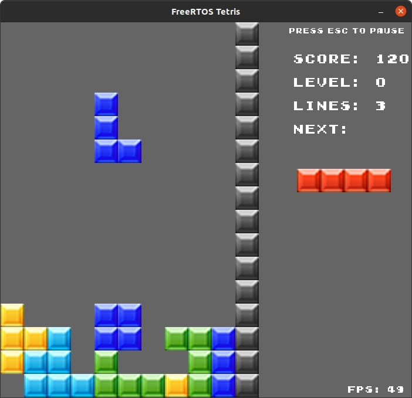
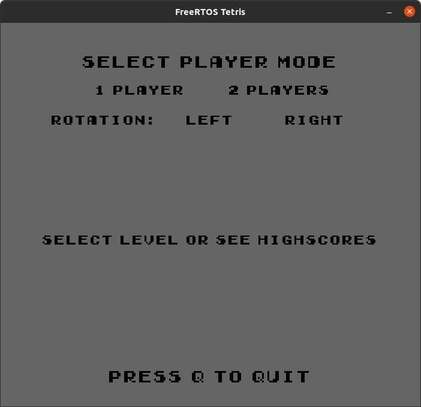
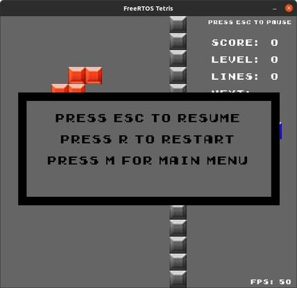

Introduction
Welcome to my little Tetris game using the open-source RTOS FreeRTOS. This project was developed in the scope of a laboratory at the Technical University of Munich. In this laboratory I was tasked to create a Tetris game using FreeRTOS, building on the existing framework provided Alex Hoffman, who was the instructor for this course. The FreeRTOS Emulator that he provided can be found here.
Project Overview
The project is divided into the following modules:
- A Configuration Module that allows for some game configurations.
- A Game Module that handles the main game functionality, e.g. tasks & menus.
- A GUI Module that makes use of the FreeRTOS Emulators built-in Drawing API.
- An Input Module that handles any mouse or keyboard input using the SDL & Emulator's Event API.
- A Logic Module that handles the game's logic.
- An Opponent Module that allows playing against an "opponent" executable (found in the opponents folder) by sending/receiving UDP messages.
- A State Machine Module that handles switching between the different tasks.
Configuration:
Some configurations to be done in the Configuration Module:
- There are 6 usernames that can be set
- If you want to enable sound effects, set
ENABLE_SOUND_EFFECTS to 1
WARNING: Sound effects may be very annoying or not in sync at all time
- You can also change the background color, the block textures & sound effect files from here
Building the Project
Prerequisites
To build the project, you need to have the following libraries installed:
cmake (e.g. sudo apt install cmake)libsdl2-dev (e.g. sudo apt install libsdl2-dev)libsdl2-gfx-dev (e.g. sudo apt install libsdl2-gfx-dev)libsdl2-image-dev (e.g. sudo apt install libsdl2-image-dev)libsdl2-ttf-dev (e.g. sudo apt install libsdl2-ttf-dev)libsdl2-mixer-dev (e.g. sudo apt install libsdl2-mixer-dev)
The project can only be built for Linux in the current configuration. For other operating systems, adjust the CMake files.
Compiling
To compile the project, run the following commands:
mkdir build
cd build
cmake ..
make
Controls
- Up: Rotating the Tetromino.
- Down: Falling faster (this button can be held down).
- Left/Right: Moving the Tetromino to the left/right.
Menus
Main Menu Screen
- Click on the rotation/player mode to select
- If a rotation & player mode have been selected, press S to start
- Click on the "Select level" text to go to the level/high scores screen
- Click on a level to select that level
- If multi player mode is selected & a connection has been established,
click on a mode to select that mode

Game Screen
Pause Screen
- Press Esc to continue
- Press R to restart the game
- Press M to go back to Main Menu
- If the game is over:
- Select your username by clicking
- Press R to restart
- Press M to go back to Main Menu
